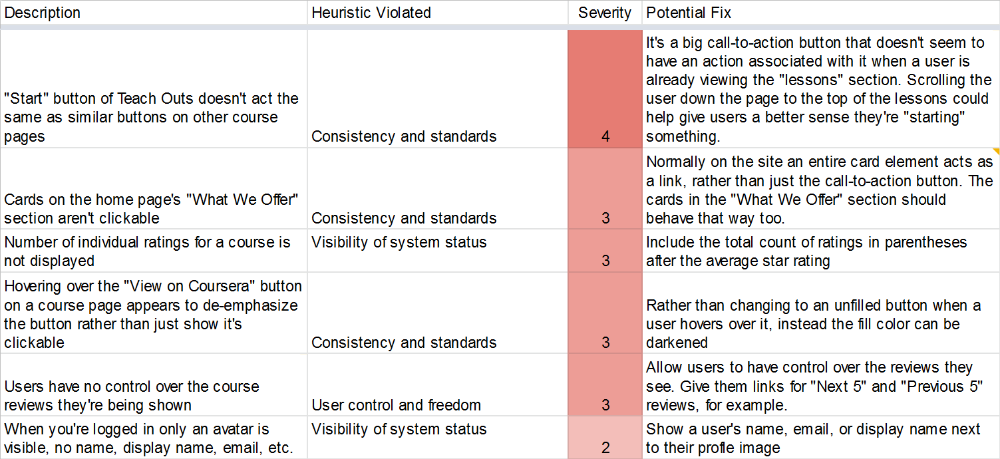
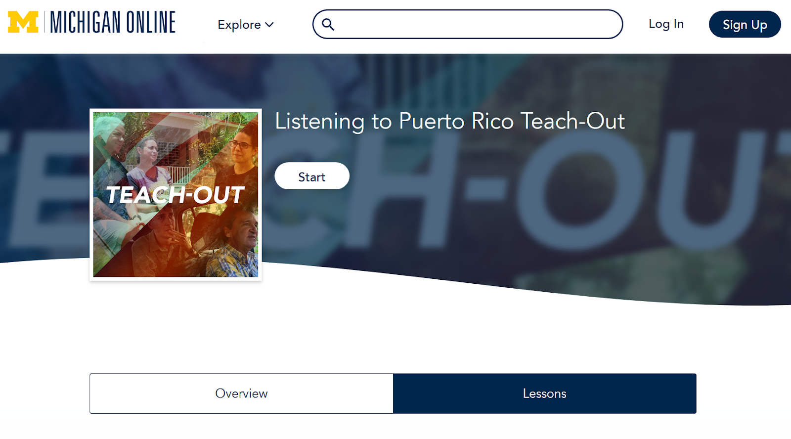
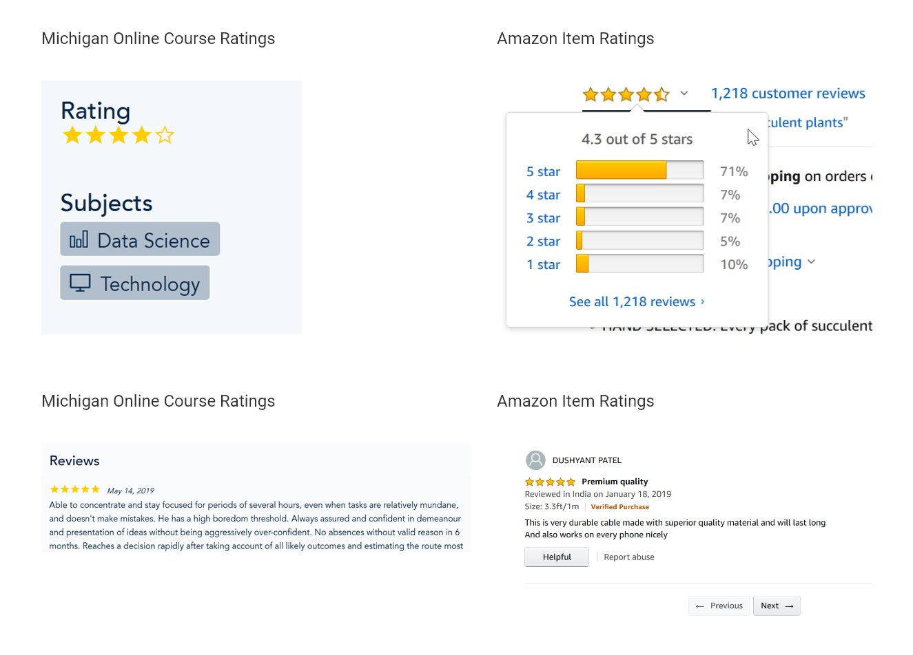
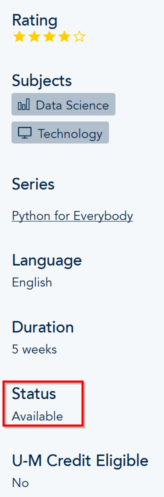
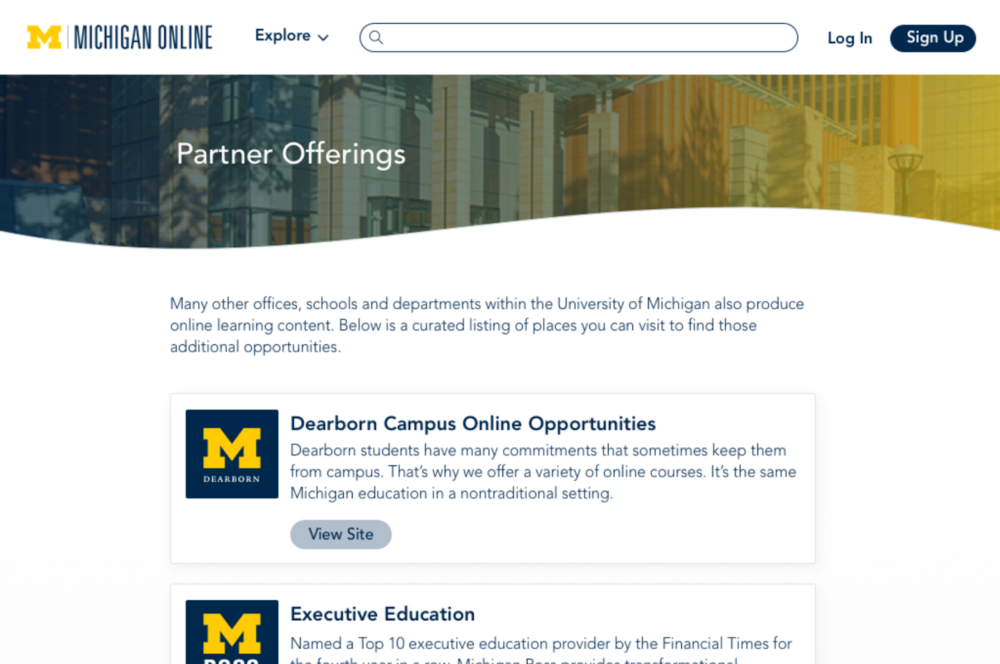

Michigan Online
Designing and developing.
Job Title
User Experience Design Fellow
Responsibilities
Improved the usability of existing AI tools and designed the experience of new products. Helped to conduct user research and assisted with UI design, rapid prototyping, and web-based tool development.
Timeframe
May 2019 - Aug. 2019

The University of Michigan's Center for Academic Innovation is a organization that strives to make world-class education available to anyone who desires it. They use design, research, expertise, and technology to bring better learning experiences to larger audiences than ever before, and I served as a UX Design Fellow to design and develop new experiences.
One of those tools that AI has created is Michigan Online, and it served as my main area of focus. Michigan Online strives to make the world-class educational opportunities from the University of Michigan available to the full U-M community and help learners connect during their educational journeys.
Large Project: New Degree Details Page
Developed the new Degree Details page for Michigan Online
Small Project: Learner Progress Cards
The Michigan Online team was designing a new experience called "My Learning" for users to help them view the progress they've made across all the MOOCs they participated in through Michigan Online. I was tasked with finalizing the designs of the cards that would be given to each learning experience in a user's "My Learning" page.
Initial Designs
I was given an original set of card designs that were created when the "My Learning" experience was being brainstormed. I collected feedback from four potential users to identify areas to improve, and began iterating over various designs.

First iteration
I focused mostly on which pieces of information we wanted to include on each type of card. We needed to determine how much information about a learning experience we could include before things started to feel cluttered.

Mid Point
Further iterations focused on smaller elements such as how we should visualize a user's progress in a course.

Final Designs
These are the final designs I created that the Michigan Online team approved and placed onto the four screens of the future "My Learning" experience.


Small Project: Heuristic Evaluation
When I started my position at AI I completed a heuristic evaluation of the Michigan Online website to become acquainted with the site’s functionality, flow, and visual identity. A few months prior the site had published a large visual redesign, and my manager wanted a fresh set of eyes to find any potential usability issues the team had missed.
I evaluated the website using Nielsen’s 10 Usability Heuristics and tracked each violation I found. I recorded the heuristic violated, its severity, and a potential fix for each instance, and noted the “Match between the system and the real world” and “Consistency and standards” heuristics were violated most often. I presented my top findings to the rest of the Michigan Online team and outlined them below.
Confusing Call-to-Action Buttons
Heuristic: Consistency and standards
Violation: The "Start" call-to-action button for “Teach Out” learning experiences doesn't act the same as CTA buttons on other course pages. Clicking the “Start” button doesn’t currently start anything for users. CTA buttons on the other course pages take users to new pages, windows, or websites. From the “Overview” section clicking it will take users to the “Lessons” section. Clicking from the “Lessons” section doesn’t seem to do anything.
Potential Fix: Scrolling the user down the page to the top of the list of lessons could help give users a better sense they're "starting" something.
Unclear Course Ratings
Heuristic: Match between system and the real world
Violation: There’s little transparency for a course’s ratings, but users are probably used to having that information from their other online experiences. The number of individual ratings for a course is not displayed, and there is no breakdown of how the overall rating is calculated. Users also have no control over the reviews they’re shown; it’s a fixed part of the screen.
Potential Fix: Include the total count of ratings in parentheses after the average star rating. Also, allow users to have control over the reviews they see. Give them links for "Next 5" and "Previous 5" reviews, for example.
Ambiguous Class Attributes
Heuristic: Match between system and the real world
Violation: Students might not understand what the attribute "Status" means on a course or series page. A “status” of “available” doesn’t map to anything used to describe a typical in-person class students would register for.
Potential Fix: Using a word like "Enrollment" might work better than "Status". Options below it could be "open", "closed", "rolling", "starting soon", etc. MOOCs aren’t very similar to typical college courses, but it would still be worth exploring other terminology that is more typically associated with classes.
Small Project: Partner Offering Page
Michigan Online isn't the only online source for learning content created across U-M's various campuses, and we needed to create a new page to advertise content from those other partners. I was given high-fidelity prototypes of a new "Partner Offerings" page and tasked with developing the new webpage. Using a combination of existing HTML and CSS assests developed by the MO team and new assets I developed myself I replicated the designs and presented my work to the Michigan Online team.
My development work used a hard-coded list of partner cards, but our solution needed to update dynamically. I worked with a software developer fellow to replace my hard-coded list with a templated solution that the Django back-end could populate. Based on my front-end work she was able to update the Django data model to include the data I needed, and we worked together to integrate everything in the HTML template. Check out the Partner Offering page here!
Reflection
Working with U-M's Center for Academic Innovation certainly improved my design and development skills. Reflecting on my experiences there are four key things I learned.
- How to incorporate feedback into my designs from a wide range of stakeholders
- How to present my design work to stakeholders without a design background
- Designing to match someone else’s visual identity guidelines is more difficult than matching guidelines I created
- Best practices for web development of a large scale web site, and how UX Designers fit into development cycles